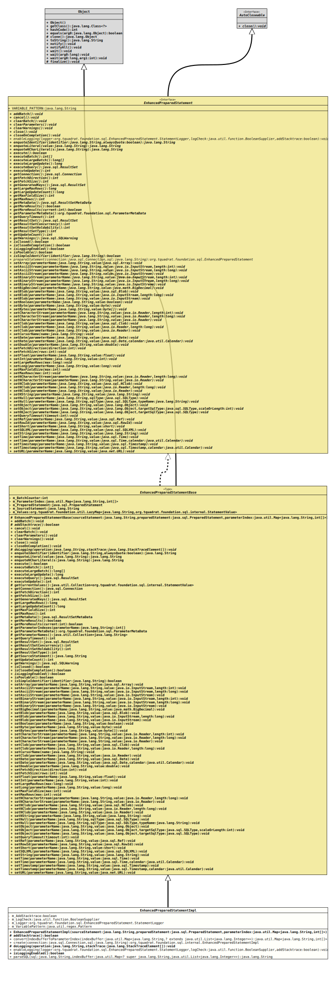

Module org.tquadrat.foundation.sql
Class EnhancedPreparedStatementImpl
java.lang.Object
org.tquadrat.foundation.sql.internal.EnhancedPreparedStatementBase
org.tquadrat.foundation.sql.internal.EnhancedPreparedStatementImpl
- All Implemented Interfaces:
AutoCloseable,EnhancedPreparedStatement
@ClassVersion(sourceVersion="$Id: EnhancedPreparedStatementImpl.java 1020 2022-02-27 21:26:03Z tquadrat $")
@API(status=INTERNAL,
since="0.1.0")
public final class EnhancedPreparedStatementImpl
extends EnhancedPreparedStatementBase
The implementation for
EnhancedPreparedStatement.- Author:
- Thomas Thrien (thomas.thrien@tquadrat.org)
- Version:
- $Id: EnhancedPreparedStatementImpl.java 1020 2022-02-27 21:26:03Z tquadrat $
- Since:
- 0.1.0
- UML Diagram
-

UML Diagram for "org.tquadrat.foundation.sql.internal.EnhancedPreparedStatementImpl"
{kind=link}
-
Nested Class Summary
Nested classes/interfaces inherited from class org.tquadrat.foundation.sql.internal.EnhancedPreparedStatementBase
EnhancedPreparedStatementBase.ParameterMetaDataImplNested classes/interfaces inherited from interface org.tquadrat.foundation.sql.EnhancedPreparedStatement
EnhancedPreparedStatement.StatementLogger -
Field Summary
FieldsModifier and TypeFieldDescriptionprivate static booleanFlag that controls whether a stack trace should be added to the log output.private static BooleanSupplierThe log check method.private static EnhancedPreparedStatement.StatementLoggerThe logger method.private static final PatternThe pattern that is used to identify a variable in a SQL statement text.Fields inherited from interface org.tquadrat.foundation.sql.EnhancedPreparedStatement
VARIABLE_PATTERN -
Constructor Summary
ConstructorsConstructorDescriptionEnhancedPreparedStatementImpl(String sourceStatement, PreparedStatement preparedStatement, Map<String, int[]> parameterIndex) Creates a new instance ofEnhancedPreparedStatementImpl. -
Method Summary
Modifier and TypeMethodDescriptionprotected final booleanReturns a flag that indicates whether a stacktrace should be added to the logging.convertIndexBufferToParameterIndex(Map<String, ? extends List<Integer>> indexBuffer) Converts the index buffer to a parameter index.static final EnhancedPreparedStatementImplcreate(Connection connection, String sql) Creates a new instance ofEnhancedPreparedStatementImpl.protected final voiddoLogging(String operation, StackTraceElement[] stackTrace) Composes the log information and sends it.static final voidenableLogging(EnhancedPreparedStatement.StatementLogger logger, BooleanSupplier logCheck, boolean addStacktrace) Enables the logging output for theEnhancedPreparedStatementinstances.final booleanChecks whether logging is currently enabled.static final StringParses the given SQL statement with the named placeholders and returns the text for a call toConnection.prepareStatement(String).Methods inherited from class org.tquadrat.foundation.sql.internal.EnhancedPreparedStatementBase
addBatch, cancel, clearBatch, clearParameters, clearWarnings, close, closeOnCompletion, enquoteIdentifier, enquoteLiteral, enquoteNCharLiteral, execute, executeBatch, executeLargeBatch, executeLargeUpdate, executeQuery, executeUpdate, getConnection, getCurrentValues, getFetchDirection, getFetchSize, getGeneratedKeys, getLargeMaxRows, getLargeUpdateCount, getMaxFieldSize, getMaxRows, getMetaData, getMoreResults, getMoreResults, getParameterIndexes, getParameterMetaData, getParameterNames, getQueryTimeout, getResultSet, getResultSetConcurrency, getResultSetHoldability, getResultSetType, getSourceStatement, getUpdateCount, getWarnings, isClosed, isCloseOnCompletion, isPoolable, isSimpleIdentifier, setArray, setAsciiStream, setAsciiStream, setAsciiStream, setBigDecimal, setBinaryStream, setBinaryStream, setBinaryStream, setBlob, setBlob, setBlob, setBoolean, setByte, setBytes, setCharacterStream, setCharacterStream, setCharacterStream, setClob, setClob, setClob, setCursorName, setDate, setDate, setDouble, setFetchDirection, setFetchSize, setFloat, setInt, setLargeMaxRows, setLong, setMaxFieldSize, setMaxRows, setNCharacterStream, setNCharacterStream, setNClob, setNClob, setNClob, setNString, setNull, setNull, setObject, setObject, setObject, setQueryTimeout, setRef, setRowId, setShort, setSQLXML, setString, setTime, setTime, setTimestamp, setTimestamp, setURL
-
Field Details
-
m_AddStacktrace
Flag that controls whether a stack trace should be added to the log output. -
m_LogCheck
The log check method. -
m_Logger
The logger method. -
m_VariablePattern
The pattern that is used to identify a variable in a SQL statement text.
-
-
Constructor Details
-
EnhancedPreparedStatementImpl
public EnhancedPreparedStatementImpl(String sourceStatement, PreparedStatement preparedStatement, Map<String, int[]> parameterIndex) Creates a new instance ofEnhancedPreparedStatementImpl.- Parameters:
sourceStatement- The original SQL statement with the placeholders; mainly used for logging purposes.preparedStatement- The wrapped instance ofPreparedStatement.parameterIndex- The mapping for the named placeholders to the position based placeholders.
-
-
Method Details
-
addStacktrace
Returns a flag that indicates whether a stacktrace should be added to the logging.- Specified by:
addStacktracein classEnhancedPreparedStatementBase- Returns:
trueif the stacktrace should be created and added,falseotherwise.
-
convertIndexBufferToParameterIndex
@API(status=INTERNAL, since="0.1.0") public static final Map<String,int[]> convertIndexBufferToParameterIndex(Map<String, ? extends List<Integer>> indexBuffer) Converts the index buffer to a parameter index.- Note:
-
- The method is public to allow simpler Unit tests.
- Parameters:
indexBuffer- The index buffer.- Returns:
- The parameter index.
-
create
@API(status=MAINTAINED, since="0.1.0") public static final EnhancedPreparedStatementImpl create(Connection connection, String sql) throws SQLException Creates a new instance ofEnhancedPreparedStatementImpl.- Parameters:
connection- The connection to the database.sql- The text of the SQL statement with the placeholders.- Returns:
- The new statement.
- Throws:
SQLException- Unable to create an instance of anEnhancedPreparedStatement.
-
doLogging
Composes the log information and sends it.- Specified by:
doLoggingin classEnhancedPreparedStatementBase- Parameters:
operation- The operation that logs.stackTrace- The stack trace; can benull.
-
enableLogging
public static final void enableLogging(EnhancedPreparedStatement.StatementLogger logger, BooleanSupplier logCheck, boolean addStacktrace) Enables the logging output for the
EnhancedPreparedStatementinstances.The
loggermethod takes three arguments:operation– The name of the operation that logs.statement– The source of the prepared statement.values– A list of the values in the format
A type of<name> [<type>]:<value>NULLindicates an unknown type; for large values (likeBloborReader) only the class is given instead of the real value.stacktrace– The stacktrace; will benullifaddStacktraceisfalse.
The
logCheckmethod returnstrueonly when logging should be done. No information is collected while it returnsfalse. As the method is called for nearly any operation, its implementation should be as efficient as possible.- Parameters:
logger- The method that takes the logging information.logCheck- The method that returns a flag whether log output is desired.addStacktrace-trueif the stacktrace should be added to the log output.
-
isLoggingEnabled
Checks whether logging is currently enabled.- Specified by:
isLoggingEnabledin interfaceEnhancedPreparedStatement- Specified by:
isLoggingEnabledin classEnhancedPreparedStatementBase- Returns:
trueif logging is enabled and log information have to be collected,falseotherwise.
-
parseSQL
@API(status=INTERNAL, since="0.1.0") public static final String parseSQL(String sql, Map<? super String, List<Integer>> indexBuffer) Parses the given SQL statement with the named placeholders and returns the text for a call toConnection.prepareStatement(String).- Note:
-
- The method is public to allow simpler Unit tests.
- Parameters:
sql- The source text for the SQL statement.indexBuffer- The mapping from the names to the indexes.- Returns:
- The target SQL text.
-